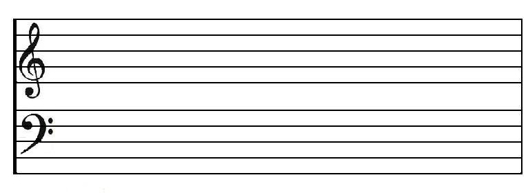

Music Theory
So easy even you could do it!
Welcome
This is filler content.
La la la
Music Theory is Easy!
Intro
Looking at a piece of sheet music for the first time can be a daunting experience. You're so used to hearing music and thinking of it as a thing heard and not a thing read that this feels completely alien to you. I know it did me when I picked up the violin for the first time in the 4th grade! I gave up reading it and played by ear! But you don't have to.
There's a difference between something being difficult and something being unfamiliar. This is important! Just because you're unfamiliar with how music is written doesn't mean it's difficult, it just means you have to learn some things first to understand it.
Hopefully to your surprise and relief, there are not that many things to learn to know most of all music!
With that out of the way, let's dive into the lessons!
Notes and Which of Them is the Boss!
As you probably already know, each sound you hear in a song is called a note.
A standard piano has 88 different keys, each playing only one note. That's a lot, but don't worry! It only takes 3 total pieces of information to understand all 88 keys. That's it.
If you don't have a piano handy, fire up Virtual Piano and have a go at the keys!
A piano is a great place to start learning music because each note is exactly the same and plays the same way.
First, it pays to know which notes you will most often be playing, so that you're more exposed to them in the music you listen to.
As it turns out, there is one note in particular that is absolutely the most extremely important to the vast majority of music you'll ever hear.
This magical-sounding note central to all music is the note middle C, a tone of about 261.6 Hz.
On a piano, it would be the white key immediately to the left of the set of two black keys:

Which exact key is that? It doesn't matter! I'll get into that later.
Intervals
The second piece of information you need to know to understand the piano keyboard is what's called an interval. This is the distance between any two notes. A note makes a tone, so going up from one note to the very next on the piano keyboard is going up a certain musical distance, and that distance is called one semitone. A semitone is also called a half-step, as when you go up in pitch, you're stepping up the keyboard keys.
So pick any key on the keyboard and press it! Now go up one key, making sure to take notice of the black keys. You just went up one semitone, or one half-step.
Accidentals: A Note's "Sharp" and "Flat" Versions!
If we say you started on C, then going up one semitone will advance you up the alphabet, but not to the letter D! That is a different note. If you play a C, then there's a black key between the two white keys C and D, and that's called C# (pronounced "C sharp").
Picking a white key before a black note and going up a semitone will get you the sharp version of that same note, but it also works the exact same in reverse, except with a different name: "flat"!
Let's say you start on a D. Go down one semitone to the black key just to the left, and you'll end up on a note that's not exactly a C, not exactly a D, but is between a C and a D, called Db, pronounced "D flat."
The sharp and flat versions of the notes are called accidentals.
The Pattern of Keys Repeats from C to C!
These are the first two things you need to know to master the piano keyboard. But there's one left, and it builds on what you just learned:
Take any note, go up or down exactly 12 half-steps, and you'll end up back at a higher/lower version of that very same note!
Since you already know where middle C is, try playing a C and then play every semitone up from that one note. You'll eventually get right back to a higher-sounding version of a C note.
And boom; you're done! You know every key on the keyboard! That's how simple this repeating system actually is.
How to Write Down What You Just Learned
Now to flesh out what you learned in the last section.
The first step to understanding music is learning the language in which it's written. This is called musical notation and is written on a template called a grand staff. Here is an example of one:
Notes can go anywhere on the lines and spaces of the staff.
If they go above or below the 5 lines of the staff, some small lines extend the staff for that one note. Those are called ledger lines.
Here is an easy way to tell what each note is on the entire staff:

On a staff, middle C looks like this:

and is the connection point between the top and bottom staves. But what are those?
Clefts
The weird glyphs you see on the very left of the staff are called clefts, which tell you which notes are on the staff, as you saw in the previous example.
The top curly thing is called the treble clef or G cleft, as the innermost curl centers around the note G.
The bottom one with the dots is the bass cleft, and the two dots on it center around the note F.
Learning Resources
Here is a list of some amazing learning resources for music that I used to learn theory.
About SiteName
SiteName aims to make learning music theory as simple as possible.
SiteName gives you an easy way to learn music that even kids can pick up. Music is actually very simple, logical, and symmetrical, and knowing what makes up music will give you better appreciation for the music you listen to and will allow you to make better decisions in your own songwriting.
The lessons are small, straightforward, and build on each other. This allows the content to be read like a book. There will also be tools and learning resources provided that will help your learning along.
Contact Me
My handle is densedever!
Facebook:
Rarely-used Twitter: